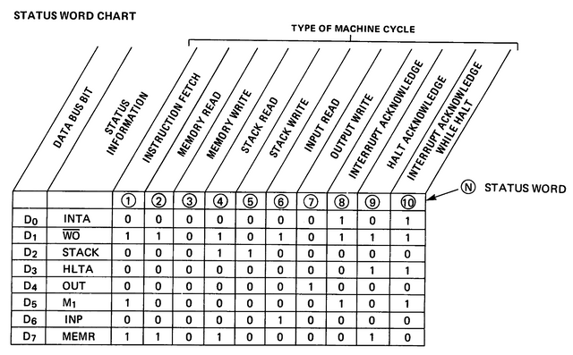

В ПЭВМ Микроша имеется "пустое" пространство по адресам 8000h-BFFFh, которое по задумке разработчиков должно использоваться для подключения внешних устройств. Если ничего не подключено, в Микроше по этим адресам считывается значение 82h. Это слово состояния (status word) процессора, выдаваемое им на шину данных в начале каждого машинного цикла.
То есть, процессор К580ВМ80А в начале машинного цикла самостоятельно выставляет на ШД определенную константу, которая показывает внешнему арбитру какой тип машинного цикла выполняется в текущий момент. Константа 82H означает чтение из памяти (MEMORY READ).
Вот какие константы в зависимости от типа машинного цикла используются в процессоре:

В случае машинного цикла чтения из памяти, если обращение происходит к реальной памяти, например ОЗУ, после выполнения обращения на ШД будет установлено значение байта из памяти. Если же обращение происходит к диапазону, который никак ничем в схеме компьютера не обслуживается, то на ШД так и остается знечение слова состояния. Скорее всего, оно остается за счет емкости, присутсующей на ШД. Именно поэтому значение 82H видно при работе с диапазоном 8000H-BFFFH в ПЭВМ Микроша.